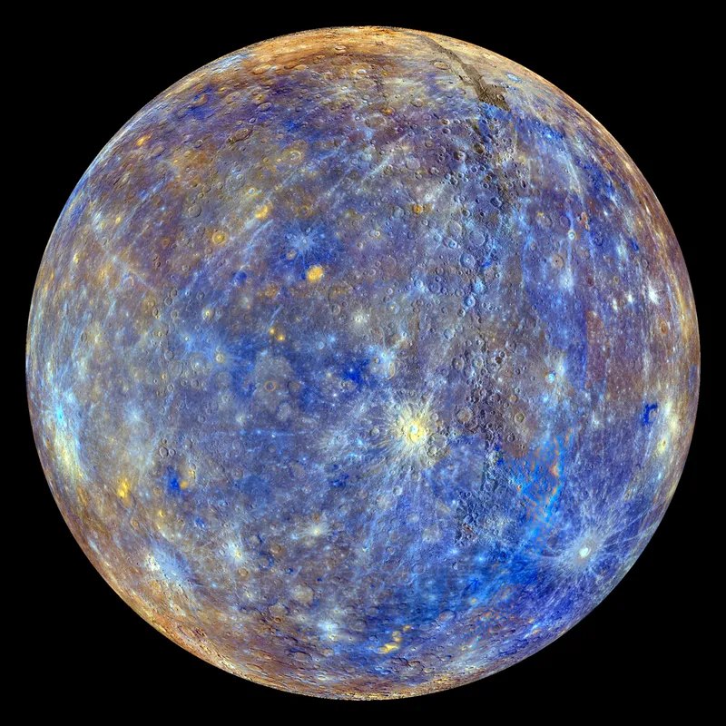
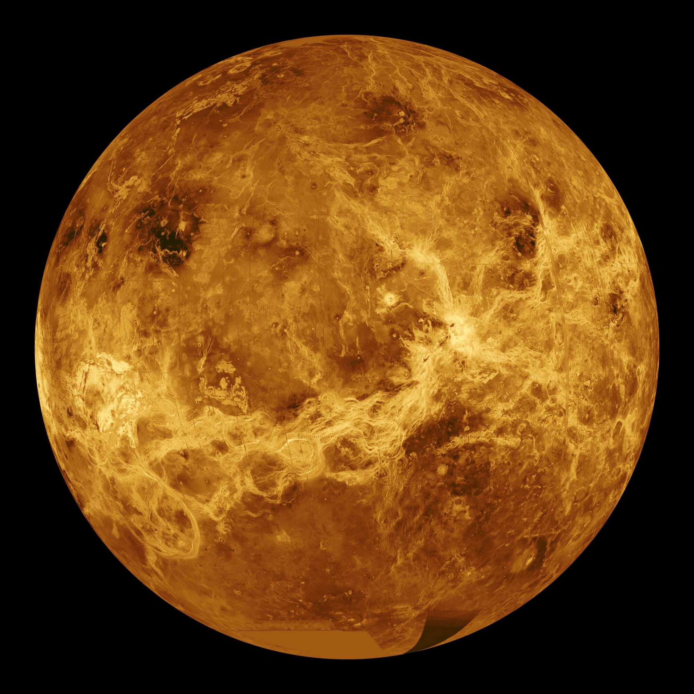
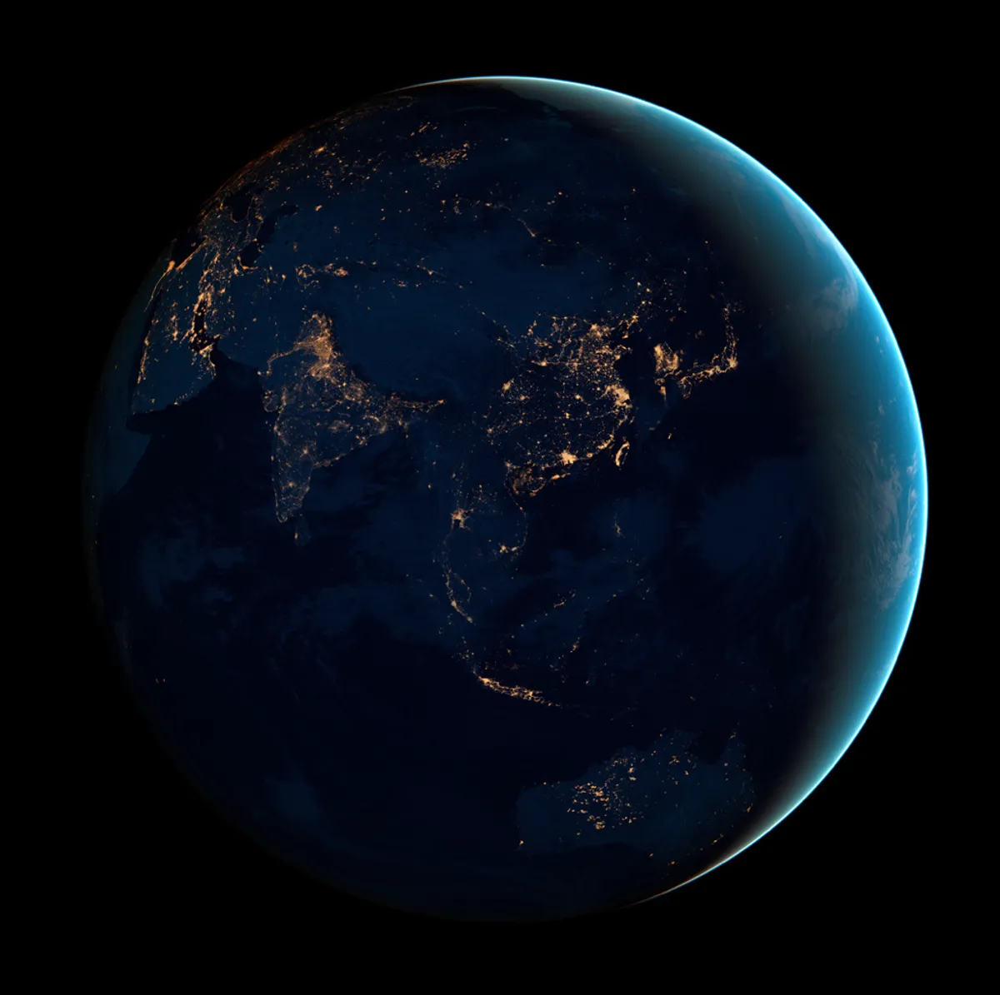
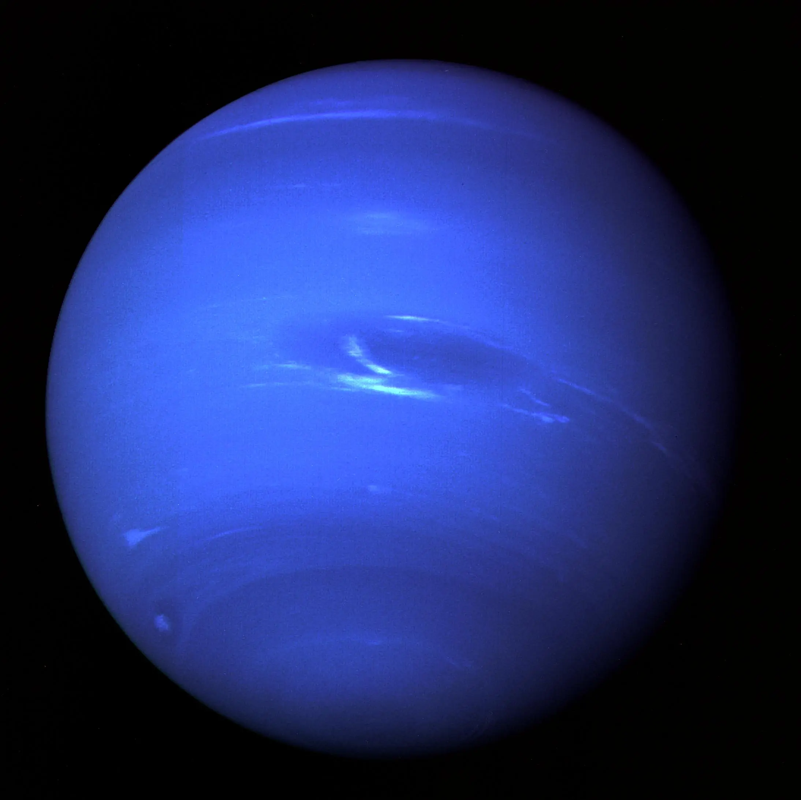
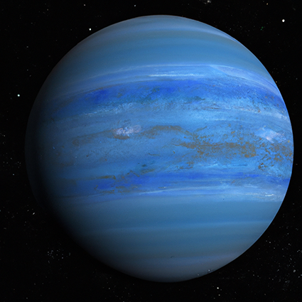
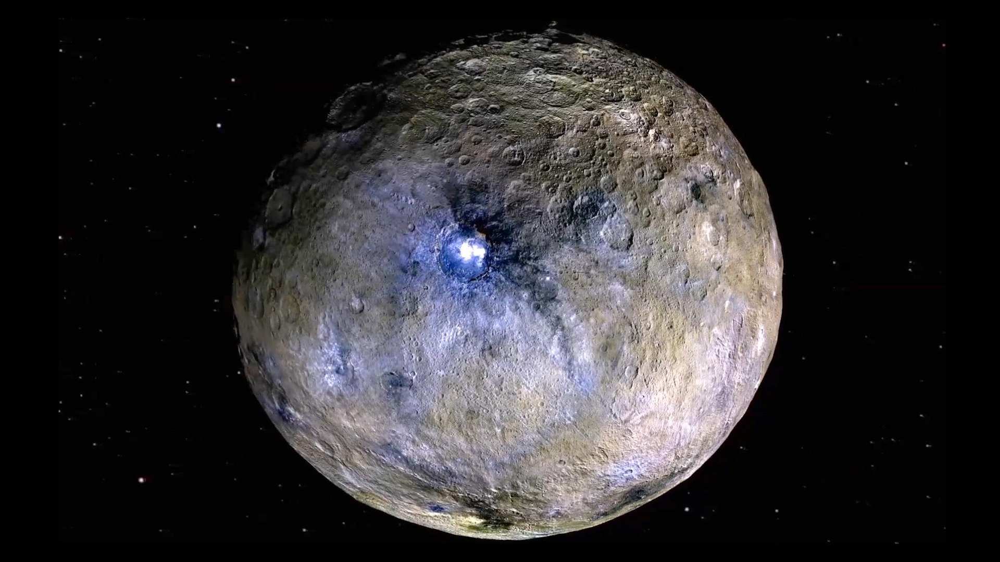

What is a Planet?
The largest objects that orbit the Sun are the eight planets. In order from the Sun, there are four terrestrial planets (Mercury, Venus, Earth, and Mars), two gas giants (Jupiter and Saturn), and two ice giants (Uranus and Neptune). All terrestrial planets have solid surfaces. There are five officially recognized dwarf planets in our solar system: Ceres, Pluto, Haumea, Makemake, and Eris.
Inner Planets:
Mercury
Venus
Earth
Mars

Outer Planets:
Jupiter

Saturn

Uranus
Neptune
Dwarf Planets:
Ceres
Pluto